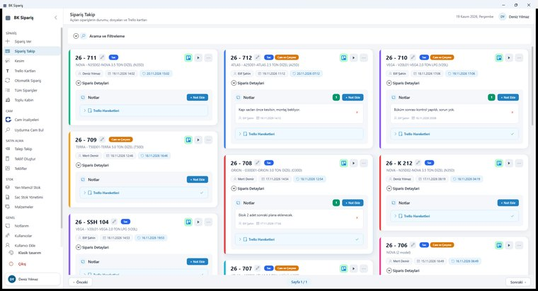
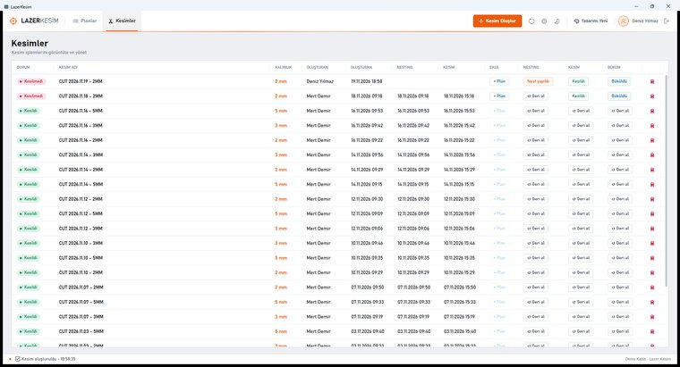
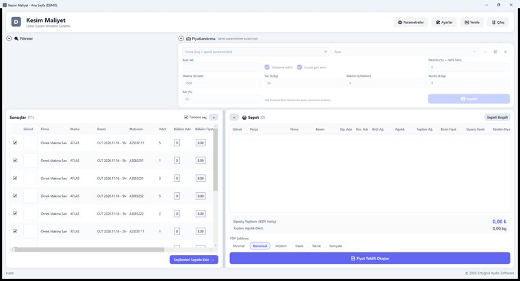
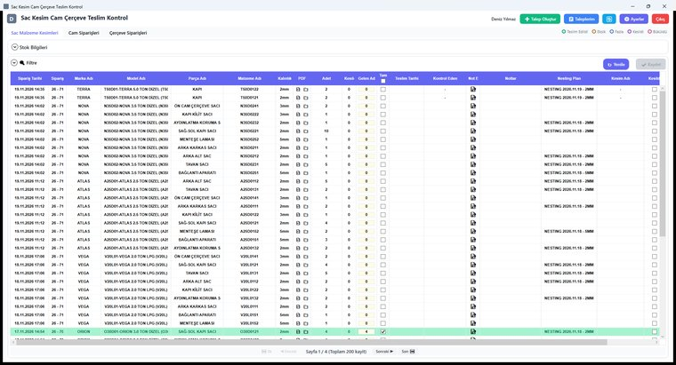
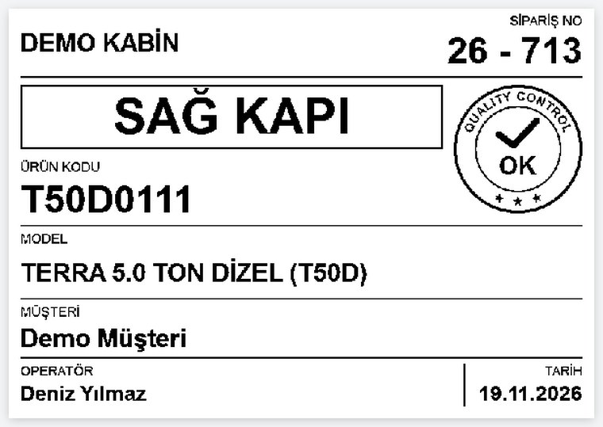

Ertuğrul Aydın
Bir kabin üreticisinin sipariş, satın alma, lazer kesim, maliyet, teslim ve etiket süreçleri için geliştirdiğim beş masaüstü uygulamasının ekran görüntülü kullanım rehberleri. Uygulamalar aynı SQL Server veritabanını paylaşır ve birbirini besler: siparişi açılan parçalar kesime, kesilenler maliyet ve teslim kontrolüne, teslim alınanlar etikete gider.
Her rehberin ilk bölümü uygulamanın ekranlarını tanıtır, ikinci bölümü ise baştan sona iş akışlarını adım adım gösterir.

Sipariş, satın alma ve stok süreçlerini tek yerden yöneten ana uygulama.

Nesting planlarını kesime hazırlayan ve kesimi baştan sona izleyen uygulama.

Lazerde kesilen parçaların maliyetini hesaplayıp fiyat teklifi hazırlayan uygulama.

Gelen malzemelerin teslim alınması, kalite kontrolü ve stok hareketleri.

Üretilen mamüller için etiket hazırlayan ve etiket yazıcısına basan uygulama.